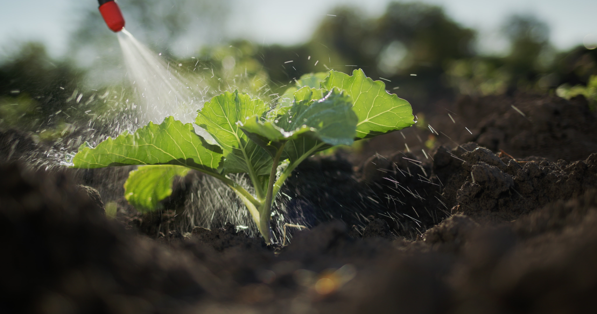
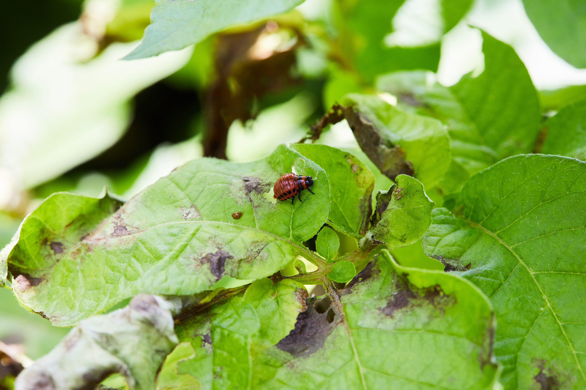
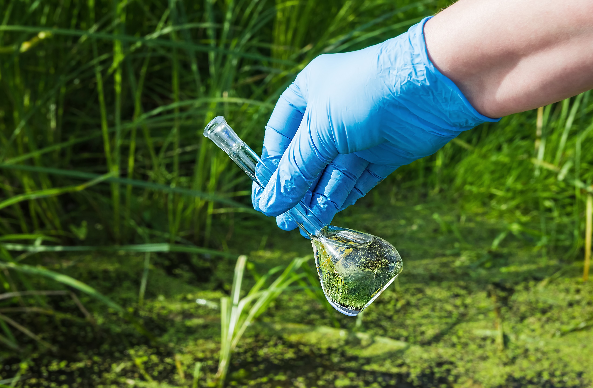

Welcome to the Dutch Pesticide Advisory Website
Provide Pesticide Solutions Globally
Unravel the Intriguing Mysteries of plant Pathology: Explore the underlying causes, diverse symptoms, and profound impact on plant health, unraveling the mysteries that lie within.
Website Introduction
About Us
Global Data of Pesticide Knowledge Graph
7000+
200000+
2

Explore a whole new world of plant diseases
Our service

Disease
introduction
Our Services offers a Detailed DiseaseIntroduction, exploring the correlationbetween diseases and specific crops. Wedelve into which crops are susceptibleto common diseases, providing farmerscrucial insights for prevention andmanagement.
Crop
introduction
Our Services offers a Detailed CropIntroduction, highlighting thesusceptibility of various crops todiseases. We explore the commonailments that affect crop health, theirsymptoms, and managementtechniques, aiming to empower farmerswith knowledge for disease prevention.

Pesticides
introduction
Our Services features a DetailedIntroduction To Pesticides, focusing onthe diseases pesticides can prevent. Weoutline the effectiveness of pesticides insafeguarding crops, ensuring healthygrowth and productivity.
Our Promise

Plant Diease Information
At the Global Pesticide Knowledge Graph, we specialize in providing thorough and current information on plant diseases. Our platform explores the intricate connections between pesticides, crops, and diseases, offering detailed insights into disease prevention, management, and control.

Updates and Improvements
We prioritize staying current with advancements in plant health research and technology. Our commitment includes continuous updates and enhancements to ensure users access the latest, most reliable information. From integrating new data to refining search capabilities, we are dedicated to evolving our platform to meet user needs.

Valuing User Feedback
We value user feedback as it guides us in improving our services. Your input helps shape a platform that meets your needs. Share your thoughts with us and help us create a better experience for you!

Prompt Issue Resolution
We are committed to providing timely and effective support to address any issues or concerns users may encounter. Our dedicated team of professionals is readily available to assist with troubleshooting, resolving technical issues, and offering guidance whenever needed. We prioritize quick issue resolution to ensure users can continue to benefit from our platform seamlessly.

 Guizhou University, Guiyang,
Guizhou,
China
Guizhou University, Guiyang,
Guizhou,
China
 +86 17885726450
+86 17885726450 wangqi@samlab.cn
wangqi@samlab.cn